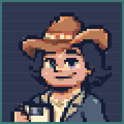
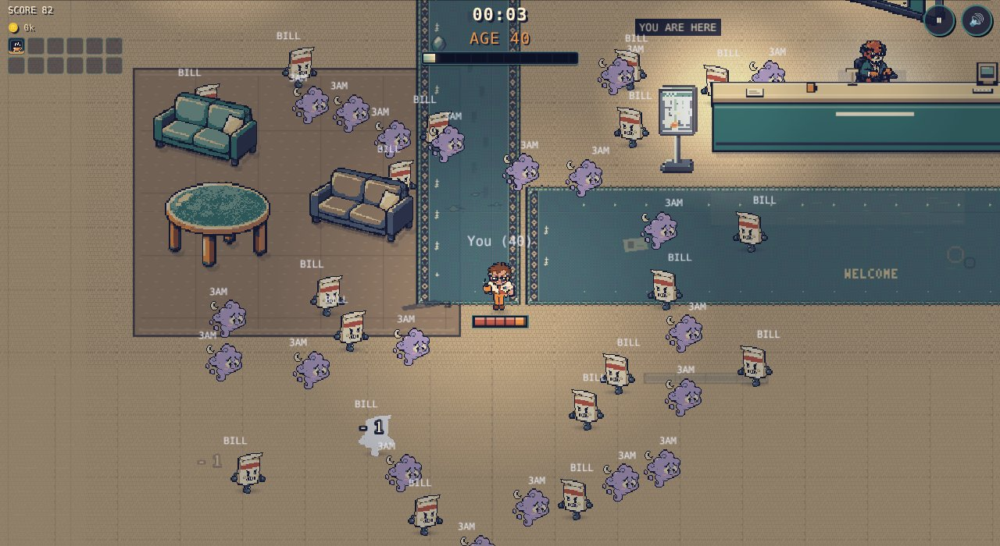
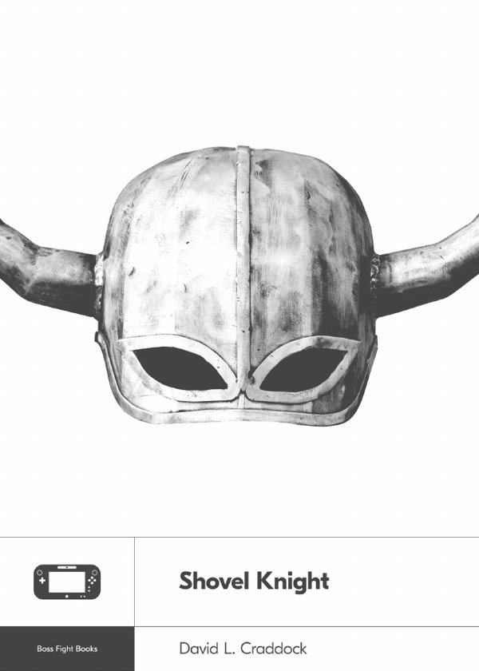
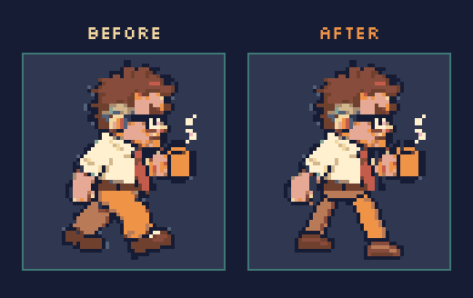
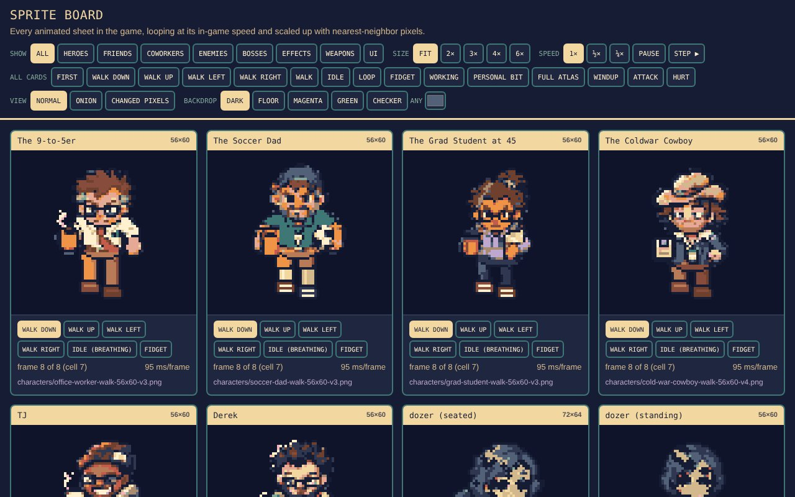
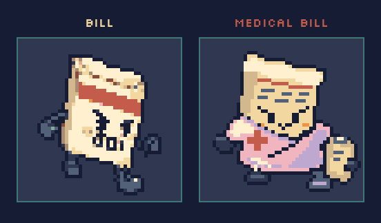
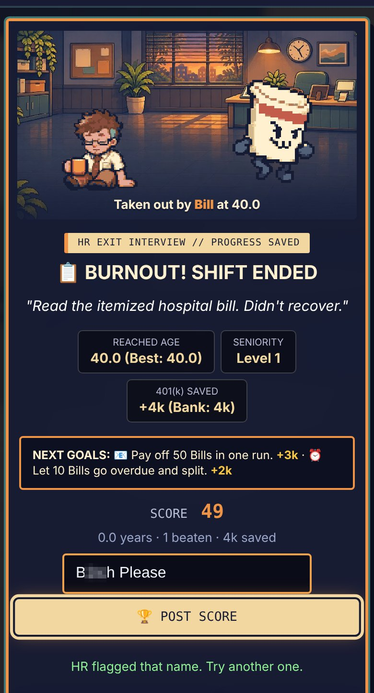
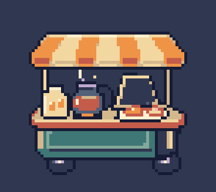
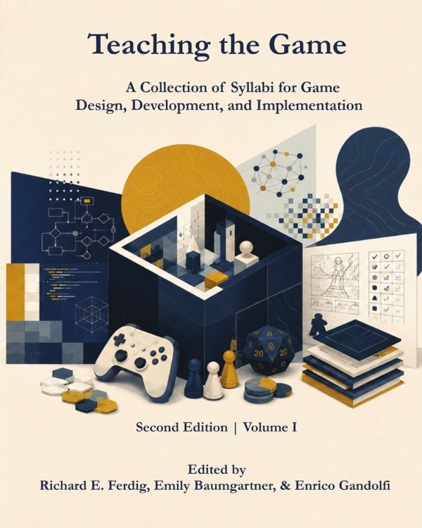
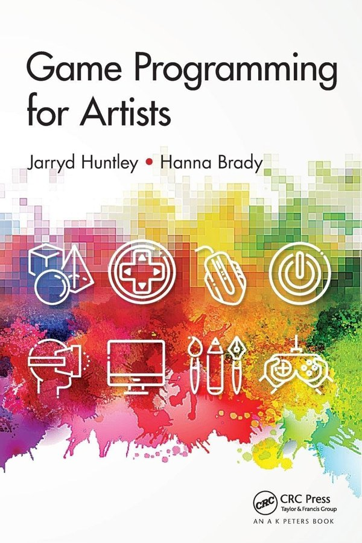

I've never been good at sitting still, and this game gives all that restlessness somewhere to go. This stretch, other people gave it plenty to do.
A couple hundred people stopped by the game this week, which still blows my mind. A few of them did more than play. A stranger on Facebook, my coworker Paul, and my old friend Kevin all told me what they honestly thought, and most of the big changes this time came from them. I mostly took notes.
Who's actually playing
I looked at the traffic for the first time this week.1I use GoatCounter, which counts page visits without cookies or names. It can't tell how long anyone stays, so for that I look at how long runs last. Most people play on their phones. Somebody in Taiwan plays a lot (that's my friend Ben).2 
In a world of social media, it's really cool that people took time out to try something that came out of some random new obsession of mine. Well, maybe not so random. This has been cooking in my head for a long time, but I kept getting overwhelmed by the coding. My brain tried, but it just doesn't hold on to it. Practice makes perfect, though, and hopefully I'll start to pull some real lessons for myself out of this as well.
The people who showed up
A stranger on Facebook
A random person commented on my personal Facebook post. It's public, but no one is really knocking down my door. So for the message to be so nice, from someone who'd obviously played through the game and given it some thought, felt like a real honor.
His point: in a game like this, your only real job is reading the swarm,3In games like this you never aim or shoot. Your weapons fire on their own, so all you do is move, and reading the crowd is the whole skill. and Bills and 3 AM Thoughts read as one blob once there are 200 on screen. His fix was to make them move differently. So now Bills march straight in, and 3 AM Thoughts drift side to side on their way. Same size, same speed, and you can pick them out at a glance.

Here's the whole change. Bills didn't get touched at all. The new part only runs for 3 AM Thoughts, and the two knobs live in the enemy list, so I can tune the wobble without touching the game logic:
// 3 AM Thought: same size and speed as before, plus two new numbers
weaveHz: 0.8, // side-to-side swings per second
weavePx: 18 // how far it drifts to each side, in pixels (0 = walks straight like a Bill)
chase(thought, speed); // same as a Bill: head straight for the player
// Each Thought starts its wobble at a random point, so a crowd doesn't sway in sync
if (thought.weavePhase === undefined) thought.weavePhase = Math.random() * Math.PI * 2;
// Then add a push across the direction it's walking, following a slow wave.
// It only goes sideways, so it reaches you just as fast as before.
const v = thought.body.velocity, len = Math.hypot(v.x, v.y);
const w = Math.PI * 2 * T.weaveHz;
const side = Math.cos(thought.weavePhase + ageMs / 1000 * w) * T.weavePx * w / len;
thought.setVelocity(v.x - v.y * side, v.y + v.x * side);
Paul

My coworker Paul sat down with the game and sent me notes, a screen recording, and some reading: Shovel Knight by David L. Craddock, from Boss Fight Books, about how a small team made a modern classic. It felt really good to get real, honest, knowledgeable advice, and research materials to help me think more deeply about what I've gotten myself into.
What came out of it:
- A steady walk. The hero's legs used to speed up and slow down with the frame rate.4Before, the legs moved one frame every time the screen redrew, so a slow phone meant a slow walk. Now they flip every 95 milliseconds no matter what. Now they keep their own clock, and the walk cycles were redrawn so the legs actually trade places.
- The Sprite Board. Paul's idea: one page that shows every sprite in the game side by side, on any background color, with buttons to flip every card to the same pose. It's how I check new art now.
- Cleaner coworkers. The office crowd got a pixel cleanup.

The Sprite Board is public, so you can poke around it yourself: open the Sprite Board. Pick a backdrop, slow everything down to a quarter speed, or flip on onion skin to see the frames stacked.

Kevin
Kevin is a friend from way back in high school. He found the game on Discord and started sending ideas, and three of them are in the game now:
- Hustle Bonus. Running around the map and exploring before 55 earns you more.
- Burning the Candle. After 55 the script flips. Too much running around fills a wear meter, and when it's full, a Medical Bill comes for you.5Medical Bills have double the health of a regular Bill and hit a little harder. From all those energy drinks, right?
- Fiscal-year seasons and the Corporate Buyout. The leaderboard resets with each season, and once a season you can cash out your upgrades for half price and start fresh.6Scores you post after a buyout carry a small BOUGHT OUT tag on the leaderboard.

Tonight he also asked if I had a language filter ready for the inevitable high scorer who goes ten steps beyond "Seymore Butts." I did not. Now I do. Swears and slurs get bounced at the door ("HR flagged that name"), and the database turns them away too.7It catches number swaps like 5h1t and stretched-out spellings. The database checks names too, so you can't sneak one in by skipping the game. Semore Butts lives on, though.
The trick is undoing the disguises before checking the name:
// 1. Lowercase, then swap numbers and symbols back into letters ("5h1t" -> "shit")
const swapped = name.toLowerCase()
.replace(/[0134578@$!|+9]/g, c => ({ 0: "o", 1: "i", 3: "e", 4: "a", 5: "s", 7: "t", 8: "b", 9: "g", "@": "a", $: "s", "!": "i", "|": "i", "+": "t" })[c]);
// 2. Squash out spaces and dots ("s.h.i.t" -> "shit"), then collapse stretched letters ("shiiiit" -> "shit")
const squash = swapped.replace(/[^a-z]/g, "");
const once = squash.replace(/(.)\1+/g, "$1");
// 3. Check the worst words anywhere in the squashed name, and the shorter ones only as whole words,
// so names like Hancock and Dickens still get through

Best part: this has turned into a way for us to reconnect after a long time. That alone made the whole project worth it.
The music
The game has a soundtrack now: a title theme, three moods that build as you get older, a boss track, and a retirement party at the end. It's AI-generated. I wrote the prompts, picked the takes I liked, and Claude trimmed and leveled them for the game. The sound effects were made the same way, replacing the old code-made beeps.8Those were made in code with the browser's built-in audio. No sound files at all. If you miss those, there's a "Classic Beeps" switch in the pause menu.
Here are two of the prompts, one phrase per line so they fit on a phone, with a player under each so you can hear what came out. The music came from Google's Flow Music:9Flow Music runs on Google's Lyria music model.
{
"tool": "Google Flow Music",
"track": "title theme, take 2",
"prompt": [
"16-bit SNES-style chiptune title screen theme",
"catchy square-wave lead melody",
"soft bass, light drums",
"warm, a little wistful and optimistic",
"like coffee on a Monday morning",
"major key, 100 bpm, steady tempo",
"loops cleanly, no fade-out"
]
}
And the sound effects came from ElevenLabs. This is the one you hear when a boss goes down:
{
"tool": "ElevenLabs Sound Effects",
"sound": "boss defeat",
"prompt": [
"Cartoon boss defeat",
"a comedic crash",
"a descending slide whistle",
"then a loud rubber stamp thump",
"retro game style"
]
}
It still needs work, honestly. I want my son to make it, but he's still learning. I want the music and sound effects to hang together and still feel a little chaotic, like midlife. That's a hard balance.
In the meantime, I made an unofficial soundtrack: the Midlife Survivors playlist on Apple Music, songs that fit the vibe of the game. Next memo, I'll get into why music matters so much to me, and why it's become one of the most important side characters in this whole thing.
Everything else
There's a lot more in this stretch: an office map, a friendlier first day, the Student Lounge with its own weapons, boss defeat art, a new coin economy, a controller pass for playing on the TV, and real art for every gem, coin and projectile. The full list is in the changelog.
TJ and Derek were quiet this time, although they did get a new cart. It parks somewhere in the lobby for the first two minutes of a run, and it only sells things you can't get later.

The reading list

Two more for the reading list. First, Teaching the Game, edited by Rick Ferdig, Emily Baumgartner and Enrico Gandolfi. It collects real game design courses: how they run playtests, how students keep devlogs, and how AI fits into the work. It's free to read.
Emily is currently my creative coding professor in EMAT, and I took an AI workshop with Rick this summer as part of the College of Aeronautics and Engineering. Both professors are incredible, and if that's an indication of what the next few years have to offer, I'm excited.

And one I need to pick up: Game Programming for Artists by Jarryd Huntley and Hanna Brady. Hanna is an accomplished veteran of the video game industry, who happens to be my good friend Damian's wife. A book that teaches game programming to people who think like artists sounds like it was written for me.
Thank you to everyone who played, and especially to everyone who told me what they thought. Keep it coming: join the Midlife Survivors Discord and drop your notes in #playtest-notes.